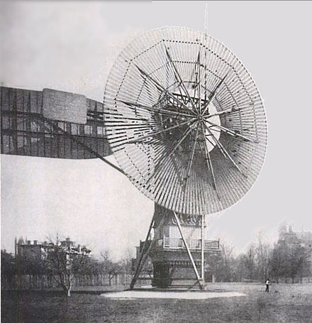

People have used wind energy to propel boats along the Nile River as early as 5,000 BC. By 200 BC, simple wind-powered water pumps were used in China, and windmills with woven-reed blades were grinding grain in Persia and the Middle East.
In the U.S., American colonists used windmills to grind grain, pump water, and cut wood at sawmills. Homesteaders and ranchers installed thousands of wind pumps as they settled the western United States. In the late 1800s and early 1900s, small wind-electric generators (wind turbines) were also widely used.
Charles Brush developed one of the first windmills in the U.S. in 1888 (pictured above). This windmill was used to power around 100 lightbulbs.
In the early 1980s, with country-wide oil shortages, alternative energy sources were sought after. In California, thousands of wind turbines were constructed. In the 90s national and state financial incentives were established to promote renewable energy use. Today, the share of U.S. electricity generation from wind energy has grown from less than 1% in 1990 to about 10.2% in 2022.
The map below shows the locations of all wind turbines in the U.S. in 2023. Toggle the buttons below the map to focus in on areas of interest.